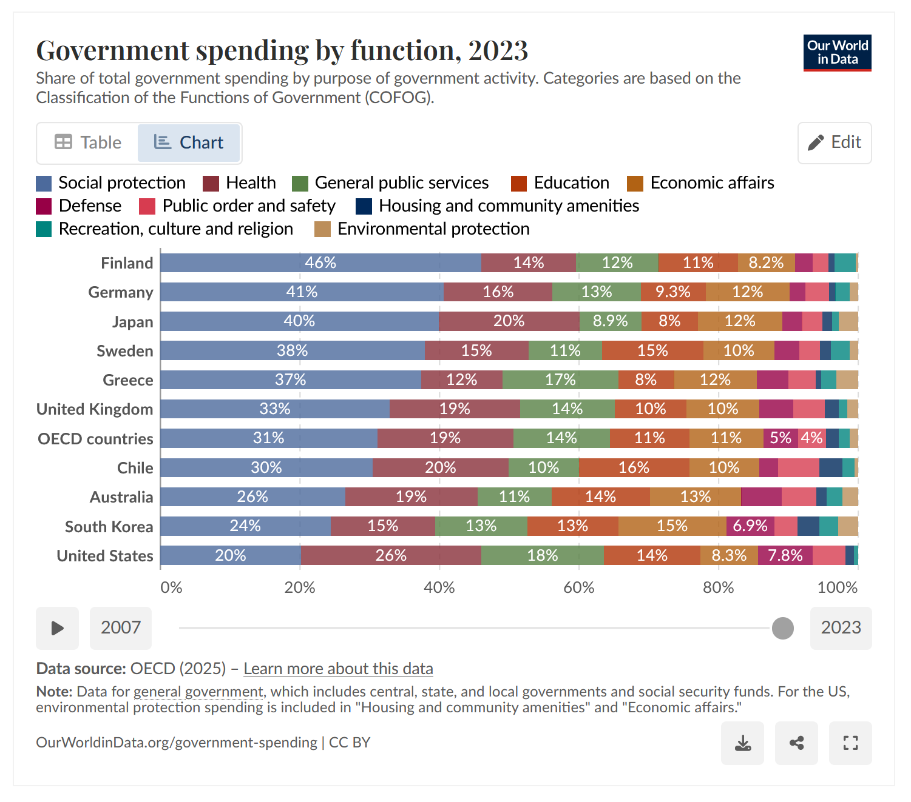
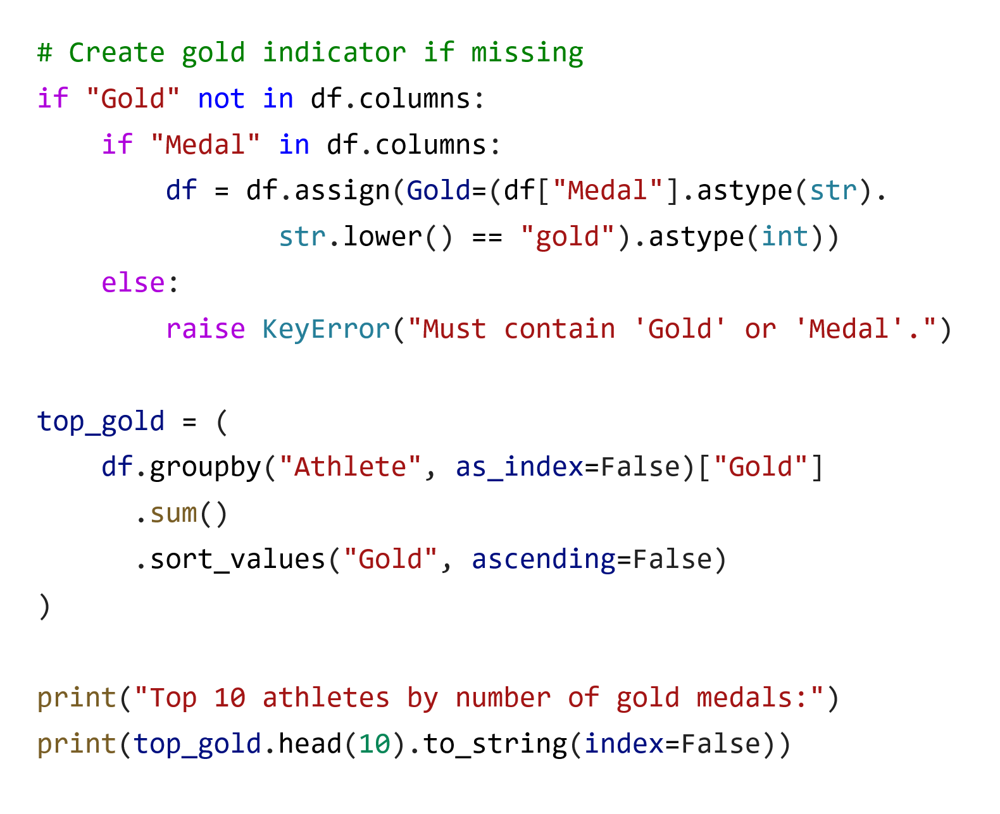
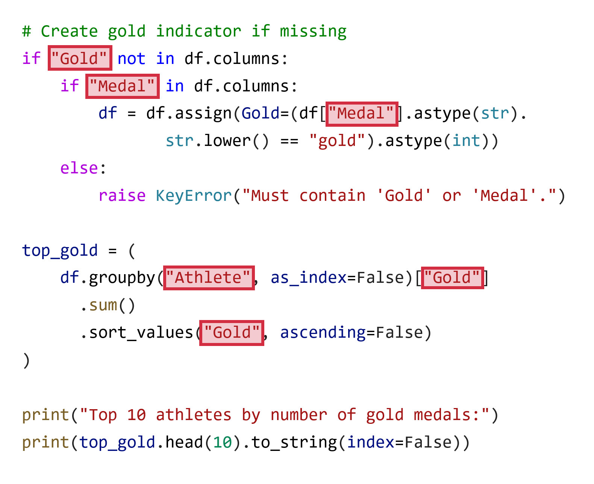
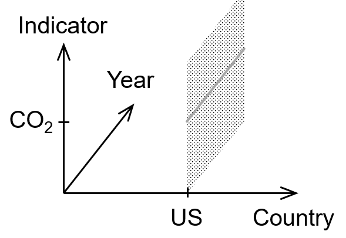
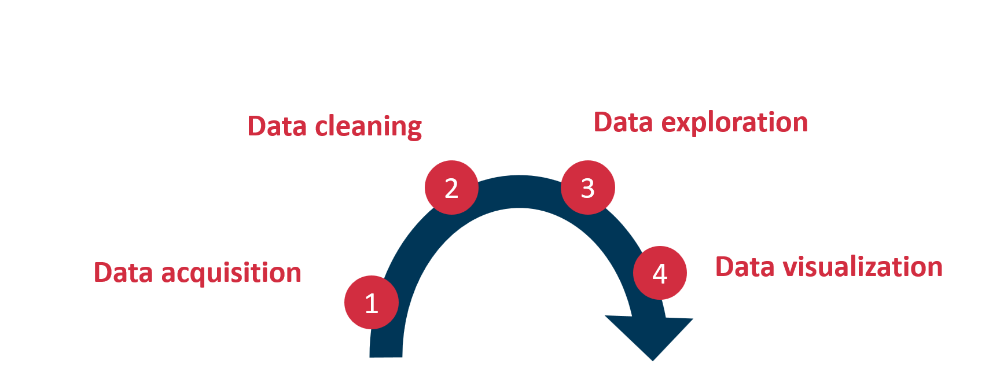
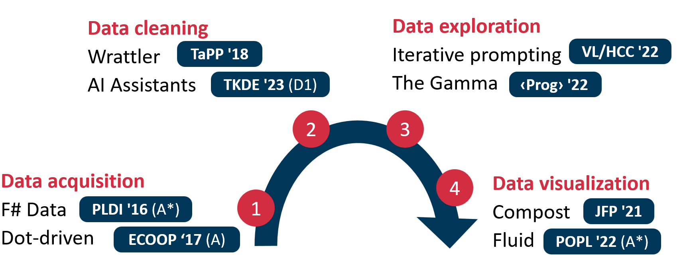
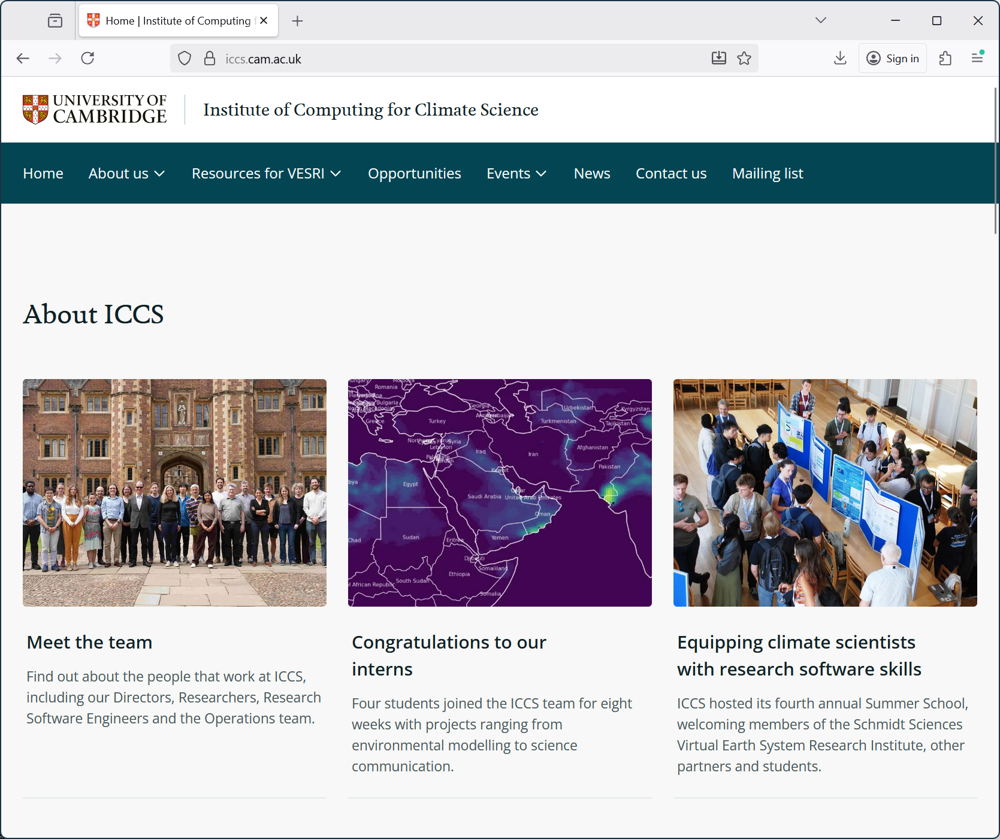
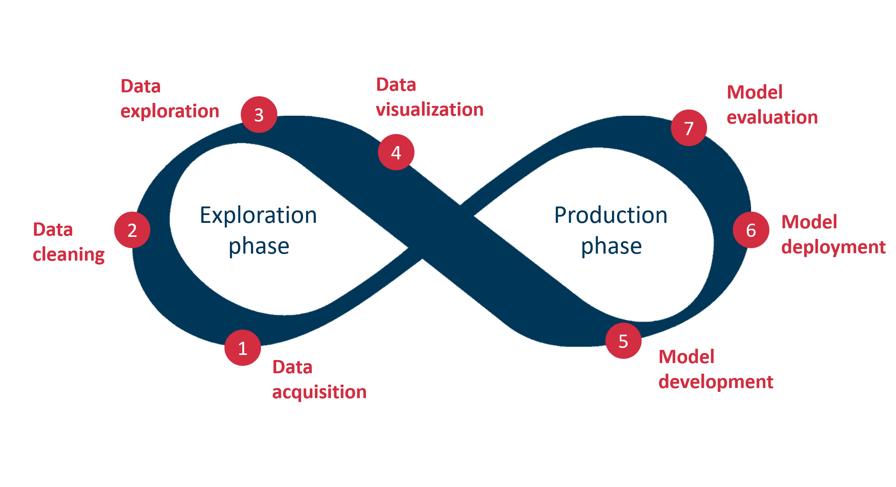
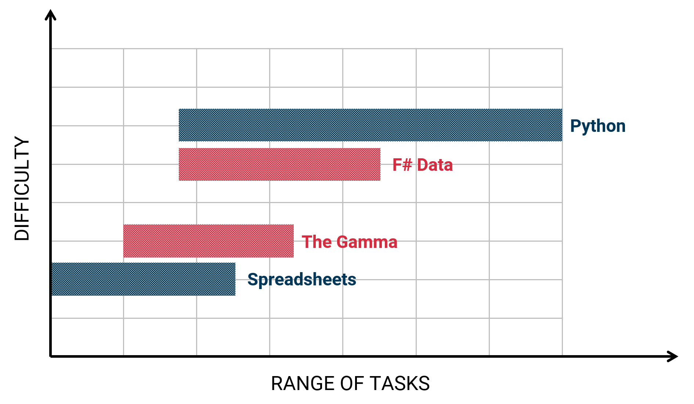
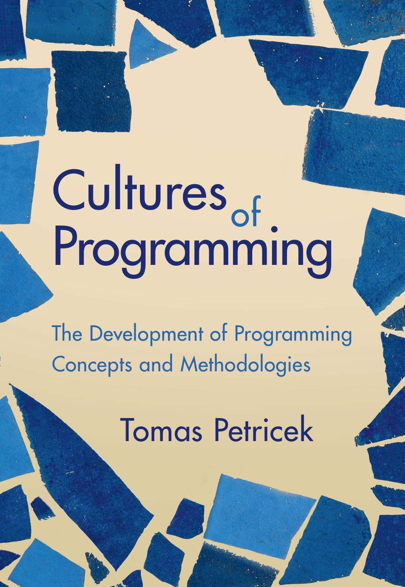

Simple programming tools
for data exploration
Tomas Petricek
Department of Distributed and Dependable Systems
petricek@d3s.mff.cuni.cz
https://d3s.mff.cuni.cz/~petricek
@tomasp.net

Part 1
Making programming with data easier
- PhD, University of Cambridge
- Microsoft Research Cambridge
- The Alan Turing Institute, London
- University of Kent, Canterbury
- Charles University, Prague
Part 1
Making programming with data easier
- PhD, University of Cambridge
- Microsoft Research Cambridge
- The Alan Turing Institute, London
- University of Kent, Canterbury
- Charles University, Prague

Data journalism
Restoring trust in data in society?
Understandability
Correctness
Reproducibility
Source code should give us all of these!
Use an AI to write the code for us?
Analysing Olympic medalists

Understandability and correctness

Understandability and correctness
Invalid columns?
Language does not understand the data

Understandability and correctness
Invalid columns?
Language does not understand the data
Complex abstractions
Designed for experts

Understandability and correctness
Invalid columns?
Language does not understand the data
Complex abstractions
Designed for experts
Inconsistencies
Are we sure it is right?
Demo
Olympic medals in The Gamma
Completion based on a formal model

Correctness meaning all
recommendations valid
Completeness meaning
all valid options listed
Research behind The Gamma

Language theory
Dot-driven development ECOOP '17 (A)
Relative type safety PLDI '16 (A*)
User-centric design
Iterative prompting VL/HCC '22
Data visualization
Composable library design J. Funct. Program '21
Type checking and type safety
Expressions
Minimal formal language model
\(e\,:=\,x\,|\,v\,|\,e.N\)
Type system
Types in program are used correctly
\(~~~~~~~\Gamma \vdash e : \tau\)
Evaluation
Formal model of how programs run
\(~~~~~~~e\mapsto v\)


Type safety
Well-typed programs do not go wrong
For any \(e\) such that \(\emptyset \vdash e : \tau\), the program evaluates to a value \(e \mapsto v\) and the result has the right type \(v \in \tau\)
But the initial environment is not empty!
It contains things from the real world! i.e. \(\Gamma_0 \neq \emptyset\)
For some data \(d\) and type provider \(\pi\), let \(\Gamma_0 = \pi(d)\)
Relative type safety
Well-typed programs do not go wrong
For any \(e\) such that \(\emptyset \vdash e : \tau\), the program evaluates to a value \(e \mapsto v\) and the result has the right type \(v \in \tau\)
As long as the world is well-behaved
Given a data sample \(d\), type provider \(\pi\) and an actual input
\(d'\) such that
\(\pi(d') \sqsubseteq \pi(d)\) then for any program \(e\) such that \(x:\pi(d) \vdash e : \tau\),
it evaluates \(e[d'/x]\mapsto v\) and \(v \in \tau\).
But does it make programming easier?
Gap between spreadsheets and Python...

Spreadsheets get many things right
Uniformity of grid, transparency of formulas

Keeping spreadsheet qualities?
User-centric evaluation
- Research lab business team
- Three different data sources
Research questions
- RQ #1: Can non-programmers use The Gamma?
- RQ #2: Can they learn from just code samples?
- RQ #3: Can knowledge transfer between sources?
Simple programming tools for data exploration

Simple programming tools for data exploration

Two Core A* conferences (POPL, PLDI) and
one D1 (98 percentile) journal (IEEE TKDE)

Follow-up work
Institute of Computing for Climate Science
Make the IPCC
reports more understandable, transparent and reproducible?
Part 2
From programming languages to systems
- PhD, University of Cambridge
- Microsoft Research Cambridge
- The Alan Turing Institute, London
- University of Kent, Canterbury
- Charles University, Prague
Research group @ D3S MFF

Programming system thinking
- Visual programming languages
- Interactive proof assistants
PRIMUS (2024-2027)
Team funded through PRIMUS
- Jan Verter (Ing from FIT CTU)
- Joel Jakubovic (PhD from Kent)
- Pablo Donato (PhD from École Polytechnique)
Supervised thesis students
- 2 Masters (2 finished)
- 4 Bachelor (13 finished)
Interdisciplinary programming research

Programming language theory
- Powerful and general methodology
- Types for data science PRIMUS 2024
Human-computer interaction
- Programming substrates UIST '25 (A*)
History and philosophy
- Cultures of Programming CUP 2025
- Donatio Chair application
Thank you
Programming is still very far
from being a solved problem!
Tomas Petricek
Department of Distributed and Dependable Systems
petricek@d3s.mff.cuni.cz
https://d3s.mff.cuni.cz/~petricek
@tomasp.net
v1
Before returning to Matfyz
-
PhD, University of Cambridge
Formal models of programming languages -
Microsoft Research Cambridge
Applied functional programming and tools -
The Alan Turing Institute, London
Expert and non-expert tools for data science -
University of Kent, Canterbury
Principles of rich programming systems
Before returning to Matfyz
-
PhD, University of Cambridge
Formal models of programming languages -
Microsoft Research Cambridge
Applied functional programming and tools -
The Alan Turing Institute, London
Expert and non-expert tools for data science -
University of Kent, Canterbury
Principles of rich programming systems

Data exploration is a half of the work!
Spreadsheets, data science notebooks, business intelligence
I propose to view systems & tools for data exploration as programming tools

What is simple?
Major gap in tooling
for data science!
Programming theory
A small number of composable primitives
User-centric view
Non-programmers can complete more tasks
Demo
Weather info with F# Data

F# Data
Makes accessing and exploring data easier for programmers
Data as a programming language problem

Application of PL ideas
- Type systems for tooling and safety
- Composable libraries of primitives
Rethink PL assumptions
- What types do we need for rich data?
- What does type safety guarantee?
\(\emptyset \vdash e : \tau\)
\(\pi(~~~~~~) \vdash e : \tau\)
Relative type safety property
Well-typed programs do not go wrong
For any \(e\) such that \(\emptyset \vdash e : \tau\), the program evaluates to a value \(e \mapsto v\) and the result has the right type \(v \in \tau\)
As long as the environment is well-behaved
Given sample inputs \(d_1, \ldots, d_n\) and an actual input \(d\) such that \(S(d) \sqsubseteq S(d1, \ldots, d_n)\) then for any program \(e\) such that \(x:S(d_1, \ldots, d_n) \vdash e : \tau\), it evaluates \(e[d/x]\mapsto v\) and \(v \in \tau\).
Demo
Olympic medals in The Gamma

The Gamma
Lets non-programmers complete simple data programming tasks
Programming tools for non-programmers

Design principles
- Work with code for transparency
- Same interface for many sources
Usability evaluation
-
13 participants from a business
team in non-technical roles - "This is actually pretty simple to use"
Simple programming tools for data exploration

Simple programming tools for data exploration

Core A* (POPL, PLDI) and Core A (ECOOP)
conferences and journals (JFP, IEEE TKDE)
After returning to Matfyz
-
PhD, University of Cambridge
Formal models of programming languages -
Microsoft Research Cambridge
Applied functional programming and tools -
The Alan Turing Institute, London
Expert and non-expert tools for data science -
University of Kent, Canterbury
Principles of rich programming systems -
Charles University, Prague
Principles of rich programming systems

Research group @ D3S
From programming languages to systems
Programming systems
with Joel Jakubovic
User experience of proof assistants with Jan Verter
Logics for visual programming with Pablo Donato
PRIMUS (2024-2027) and collaboration
with prof. Jan Vitek and FIT CTU
Interdisciplinary programming research
Programming language theory
- Applied to programming systems
- Rethink via programming systems
Human-computer interaction
- Programming substrates
History and philosophy
- Cultures of Programming

- Donatio Chair application
Thank you
Simple programming
tools for data exploration
Tomas Petricek
Department of Distributed and Dependable Systems
petricek@d3s.mff.cuni.cz
https://d3s.mff.cuni.cz/~petricek
@tomasp.net